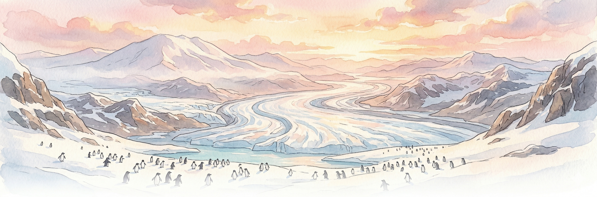
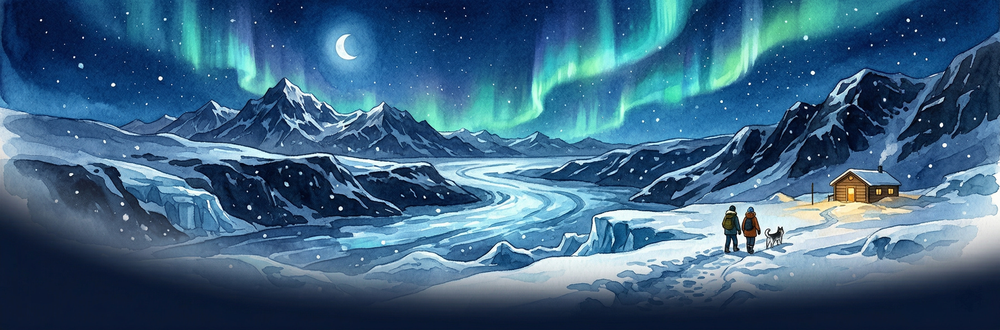
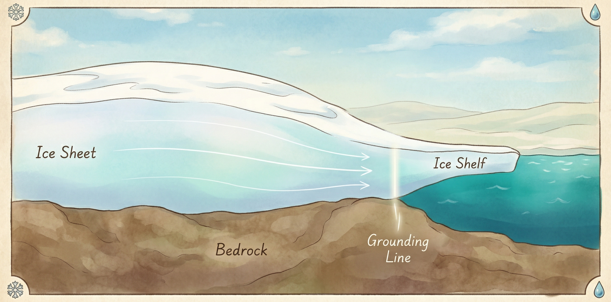

Before you start slicing glaciers — here's how ice sheets actually work, why they matter, and what changes when the climate shifts.
Background
Understanding ice sheets is essential to predicting our planet's future. Here's what you need to know before diving in.
Antarctica holds about 26.5 million km³ of ice — enough to raise global sea level by roughly 58 metres. Greenland adds another 7 metres. Together, they store over 99% of the planet's freshwater ice.
Even a small percentage of ice loss translates into metres of sea-level rise, threatening hundreds of millions of people in coastal cities. Ice sheets are the single largest uncertainty in future sea-level projections.
Ice sheets are not static blocks — they flow like extremely thick honey, driven by gravity. Snow accumulates in the interior, compresses into ice, and flows outward toward the coast, where it calves into icebergs or melts into the ocean.
Warmer ocean water erodes ice shelves from below, warmer air melts the surface, and changing snowfall patterns shift the balance. Small changes in climate can trigger large, irreversible responses.
Getting Started
Five steps to start exploring ice sheet physics.
Choose Sandbox for free exploration, or start with Challenge 1 for a guided introduction. The landing page also lets you select from real Antarctic flowlines.
The main display shows a vertical slice through the ice sheet. Brown = bedrock, white = ice, blue = ocean. The line where ice lifts off the bedrock and starts floating is the grounding line — a critical boundary.
More snowfall makes the ice sheet grow thicker and advance. Less snowfall causes it to thin and retreat. This is the simplest way to see how ice sheets respond to climate.
Warmer ocean water melts ice shelves from below, weakening the “buttress” that holds back the inland ice. Watch the grounding line carefully — does it start to retreat?
If the grounding line retreats into deeper water and keeps accelerating, you're witnessing Marine Ice Sheet Instability (MISI) — a self-reinforcing process that is one of the biggest concerns for future sea-level rise.
Scenarios
Each scenario is pre-configured to demonstrate a different aspect of ice sheet behaviour.
Start here. A healthy ice sheet in equilibrium, where snowfall balances ice discharge. Experiment with small changes to see how the system responds and returns to balance.
Launch →The bedrock slopes downward toward the interior. A small perturbation triggers runaway grounding-line retreat — the ice accelerates, thins, and the retreat feeds back on itself. This is MISI in action.
Launch →Remove the floating ice shelf and watch what happens to the grounded ice behind it. Without buttressing, the ice flows faster and the grounding line retreats. This shows why ice shelves matter even though they're already floating.
Launch →Learn
New to glaciology? These concise explanations cover everything you need to understand what you're seeing in the simulator.

A continent-sized mass of glacial ice that sits on land. Earth has two: Antarctica (14 million km², up to 4.8 km thick) and Greenland (1.7 million km², up to 3.4 km thick). Think of them as enormous, slowly flowing reservoirs of frozen freshwater that have built up over hundreds of thousands of years.
Ice deforms under its own weight, flowing from high elevations toward the coast like extremely thick honey. Two mechanisms drive this: internal deformation (ice crystals slowly creeping past each other) and basal sliding (the ice sliding over the bedrock beneath it, lubricated by meltwater). In fast-flowing glaciers, basal sliding dominates.
The boundary where a glacier transitions from resting on bedrock to floating on the ocean. It's the most important line in ice sheet science — its position controls how much ice is discharged into the ocean. When the grounding line retreats, the ice sheet loses mass and sea level rises.
The floating extension of an ice sheet that hangs over the ocean. Ice shelves don't directly raise sea level when they melt (they're already floating, like an ice cube in a drink). But they act as a “cork in the bottle” — they buttress the grounded ice behind them. Remove the shelf, and the inland ice speeds up dramatically.
A self-reinforcing feedback that can cause rapid ice sheet collapse. If ice rests on bedrock that slopes downward toward the interior (a “retrograde slope”), any retreat of the grounding line exposes a thicker cross-section of ice to the ocean. The thicker ice flows faster, driving more retreat, which exposes even thicker ice — a runaway process. Much of West Antarctica sits on retrograde slopes, making MISI a major concern.
A mathematical framework that describes how ice flows by balancing gravitational driving stress against internal resistance and friction at the bed. It's called a “higher-order” model because it captures stress transfer along the flow — crucial for modelling ice streams and grounding lines. SL-ICE solves these equations in real time so you can experiment interactively.
The motion of ice sliding over the surface beneath it, as opposed to internal deformation within the ice. Basal sliding depends on water pressure, bed roughness, and sediment type. A glacier on a well-lubricated soft bed can slide hundreds of metres per year, while one frozen to hard bedrock barely moves at the base. The SLIDE explorer lets you investigate this in detail.
When grounded ice flows into the ocean faster than snowfall replaces it, the ice sheet shrinks and sea level rises. This happens through two main pathways: surface melting (dominant in Greenland) and ocean-driven melting of ice shelves (dominant in Antarctica), which removes buttressing and accelerates ice discharge.
Explore More
SL-ICE is one of three tools for exploring ice sheet science. Each offers a different window into the cryosphere.